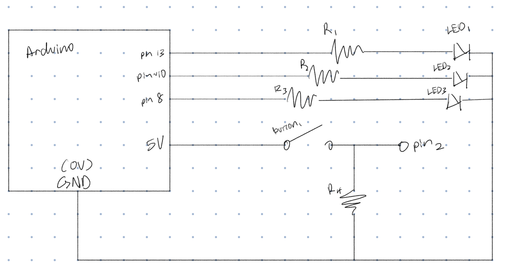
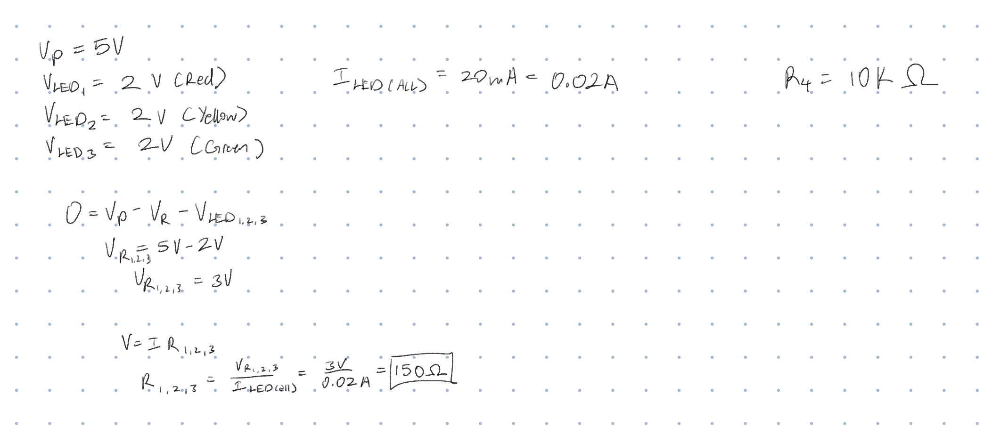
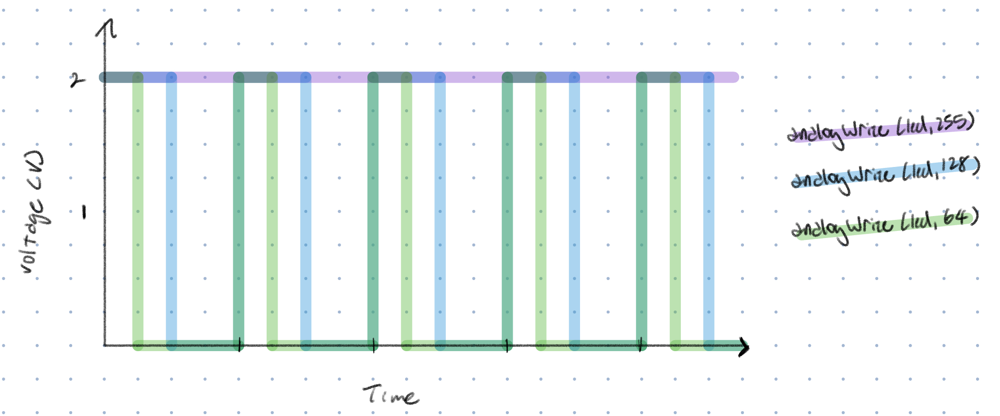

Here is all the documentation for assignment 2!
Here is all the documentation for assignment 2!

This is the schematic I drew for this assignment. It has 3 resistors and 3 LEDs that run independently, and a button to switch the state of 1 LED.

I used Ohm's and Kirchhoff's laws to calculate the resistor value I needed for the 3 LEDs I was using. The LEDs had a voltage of 2V and a 20 mA current. The Arduino has a 5V output. Using these values, I got the result of a 150 ohm resistor. However, because I didn't have a 150 ohm resistor, I used a 220 ohm resistor instead. To calculate the resistor value for the button, I knew I needed a really high resistor value, which led me to choose a 10k ohm resistor.
This is the circuit I built. It has 3 LEDs running independently. A button powered by the 5V output pin, a sensor wire going to pin 2, and a resistor connecting the button to ground.
//creates a variable for the red LED pin
int redLED = 13;
//creates a variable for the yellow LED pin
int ylwLED = 10;
//creates a variable for the green LED pin
int grnLED = 8;
//creates a variable for the button pin
int button = 2;
void setup() {
// put your setup code here, to run once:
//intializes the pin where the is red LED as an output
pinMode(redLED, OUTPUT);
//intializes the pin where the is yellow LED as an output
pinMode(ylwLED, OUTPUT);
//intializes the pin where the is green LED as an output
pinMode(grnLED, OUTPUT);
//intializes the pin where the is button is read as input
pinMode(button, INPUT);
}
void loop() {
// put your main code here, to run repeatedly:
//this reads the button output, when it's low it's not pressed which runs the code in the if statement
//when the button is pressed and held, the yellow button will fade in and out
//followed by the red LED and green LED blinking
if (digitalRead(button) == LOW){
//this loop increments the value of power going into the LED, increasing it's brightness
for(int fadeIn = 0; fadeIn <= 255; fadeIn += 5){
//sets the brightness of the LED to the value of fadeIn
analogWrite(ylwLED, fadeIn);
//holds the brightness for 10 milliseconds
delay(10);
}
//this loop increments the value of power going into the LED, decreasing it's brightness
for(int fadeOut = 255; fadeOut >= 0; fadeOut -= 5){
//sets the brightness of the LED to the value of fadeOut
analogWrite(ylwLED, fadeOut);
//holds the brightness for 10 milliseconds
delay(10);
}
//turns red LED on
digitalWrite(redLED, HIGH);
//keeps the LED on for half a second
delay(500);
//turns red LED off
digitalWrite(redLED, LOW);
//turns green LED on
digitalWrite(grnLED, HIGH);
//keeps the LED on for half a second
delay(500);
//turns green LED off
digitalWrite(grnLED, LOW);
//this section of the code runs when the button is pressed (read as high), this makes the LEDs blink
} else {
//turns pin 13 (red LED) on
digitalWrite(redLED, HIGH);
//turns pin 10 (yellow LED) off
digitalWrite(ylwLED, LOW);
//turns pin 8 (green LED) off
digitalWrite(grnLED, LOW);
//lets pin 13 (red LED) be on for half second
delay(500);
//turns pin 13 (red LED) off
digitalWrite(redLED, LOW);
//turns pin 10 (yellow LED) on
digitalWrite(ylwLED, HIGH);
//turns pin 8 (green LED) off
digitalWrite(grnLED, LOW);
//lets pin 10 (yellow LED) be on for half second
delay(500);
//turns pin 13 (red LED) off
digitalWrite(redLED, LOW);
//turns pin 10 (yellow LED) off
digitalWrite(ylwLED, LOW);
//turns pin 8 (green LED) on
digitalWrite(grnLED, HIGH);
//lets pin 8 (green LED) be on for half second
delay(500);
}
}
The video demonstrates the operation of the circuit. When the button is not pressed, the yellow LED first quickly fades in and out, followed by the red and green LEDs blinking once. When I press and hold the button, the yellow LED starts blinking with the red and green LEDs. The order goes from red to yellow to green. And when I release the button, the yellow LED goes back to fading in and out, followed by the red and green LEDs blinking once.

With PWM, it can modulate how long the LED is on for each cycle. With a value of 255, the LED is on all the time. For a value of 128, the LED is on for half of each cycle. For a value of 64, the LED is on for a quarter of each cycle.
If all the LEDs were on simultaneously, the total current draw would be 60mA. This would be below the total Arduino current draw limits. If all my LEDs were powered by a 1200 mAh battery, it would run for roughly 20 hours if the button was pressed.
The theoretical forward voltage for all my LEDs (red, yellow, green) is 2V. When actually measured, the red LED has a voltage of 1.93V, the yellow LED has a voltage of 1.87V, and the green LED has a voltage of 2.61V. For the red and yellow LED, it’s around 2V so while it doesn’t exactly hit 2V its expected. However, for the green LED, it has a slightly higher voltage than the theoretical forward voltage, which is a little surprising.
I did not use AI, however, I referenced a few Youtube videos for a better understanding of how to wire buttons with 1 LED and multiple LEDs.